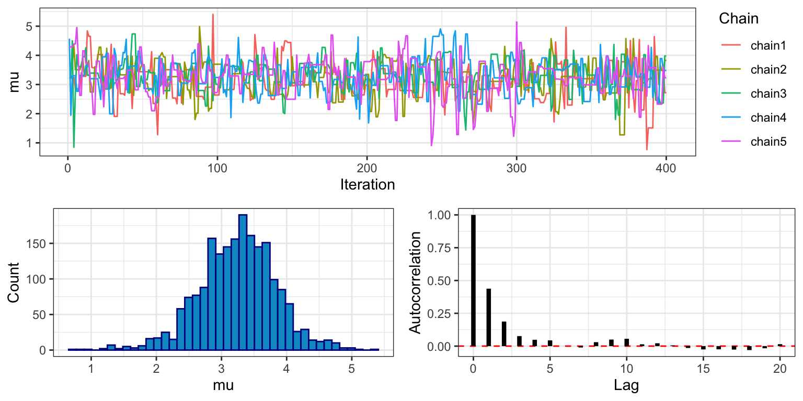
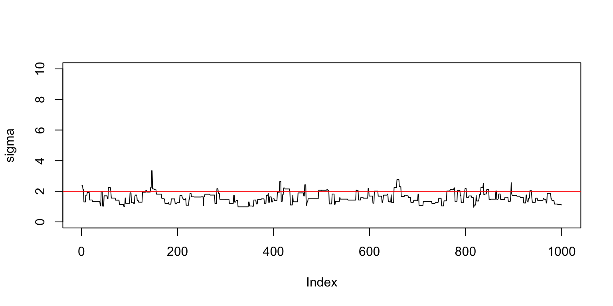

Example MCMC Implementation
Bob Verity and Pete Winskill
2020-04-04
example.RmdThe likelihood and prior distributions that go into drjacoby can be specified by the user either as R functions or as C++ functions. This vignette demonstrates a basic MCMC implementation using both the R and C++ methods, and compares the two in terms of speed.
Setup
We need the following elements to run drjacoby:
- some data
- some parameters
- a likelihood function
- a prior function
Starting with the data, let’s assume that our observations consist of a series of draws from a normal distribution with a given mean (mu_true) and standard deviation (sigma_true). We can generate some random data to play with:
# set random seed
set.seed(1)
# define true parameter values
mu_true <- 3
sigma_true <- 2
# draw example data
data_list <- list(x = rnorm(10, mean = mu_true, sd = sigma_true))For our example MCMC we will assume that we know the correct distribution of the data (i.e. we know the data is normally distributed), and we know that the mean is no smaller than -10 and no larger than 10, but otherwise the parameters of the distribution are unknown. Parameters within drjacoby are defined in dataframe format, where we specify minimum, maximum, and initial values of all parameters:
# define parameters dataframe
df_params <- data.frame(name = c("mu", "sigma"),
min = c(-10, 0),
max = c(10, Inf),
init = c(9, 10))
print(df_params)
#> name min max init
#> 1 mu -10 10 9
#> 2 sigma 0 Inf 10In this example we have one parameter (mu) that occupies a finite range [-10, 10], and another parameter (sigma) that can take any positive value. drjacoby deals with different parameter ranges using reparameterisation, which all occurs internally meaning we don’t need to worry about these constraints affecting our inference.
Next, we need a likelihood function. This must have two input arguments: 1) a vector of parameters, 2) a vector of data, and these must be input in that order. It also must return a single value for the likelihood in log space. These constraints on the format of the likelihood function might seem a bit restrictive, but they are needed in order for drjacoby to know how to use the function internally. The issue of taking logs is particularly important, as the MCMC will still run even if we forget to take logs, but the results produced will be nonsense!

Do not underestimate the importance of taking logs.
Inside the likelihood function we can extract individual parameter values from the input vector, and then use these values to calculate the probability of the data. In our example, the likelihood function is quite simple thanks to the dnorm() function which can return the density of the normal distribution already in log space:
# define log-likelihood function
r_loglike <- function(params, param_i, data, misc) {
# extract parameter values
mu <- params["mu"]
sigma <- params["sigma"]
# calculate log-probability of data
ret <- sum(dnorm(data$x, mean = mu, sd = sigma, log = TRUE))
# return
return(ret)
}Finally, we need a prior function. This must take a single vector of parameters as input, and it must return a single value for the prior probability of those parameters in log space. Again, this strict format is required for drjacoby to know how to use the prior internally. In our case we will assume a uniform prior on mu, and a log-normal prior on sigma:
# define log-prior function
r_logprior <- function(params, param_i, misc) {
# extract parameter values
mu <- params["mu"]
sigma <- params["sigma"]
# calculate log-prior
ret <- dunif(mu, min = -10, max = 10, log = TRUE) +
dlnorm(sigma, meanlog = 0, sdlog = 1.0, log = TRUE)
# return
return(ret)
}Be careful to ensure that your prior is defined over the same range as specified in the df_params dataframe. For example, here our uniform prior for mu ranges from -10 to 10, and our log-normal prior for sigma ranges from 0 to infinity.
Running the MCMC
Once we have all the elements above it is straightforward to run a basic MCMC. We simply input the four elements listed above, along with the number of burn-in and sampling iterations By default drjacoby prints progress bars to the console to keep you updated on the progress of the MCMC. When running in R markdown we can use the option pb_markdown = TRUE to print progress bars in a markdown-friendly way, although you will probably want to leave this option turned off when running interactively (simply delete this argument).
# run MCMC
mcmc <- run_mcmc(data = data_list,
df_params = df_params,
loglike = r_loglike,
logprior = r_logprior,
burnin = 1e3,
samples = 1e3,
pb_markdown = TRUE)
#> MCMC chain 1
#> burn-in
#>
|
|======================================================================| 100%
#> acceptance rate: 22.7%
#> sampling phase
#>
|
|======================================================================| 100%
#> acceptance rate: 23.7%
#>
#> completed in 0.183537 seconds
#> MCMC chain 2
#> burn-in
#>
|
|======================================================================| 100%
#> acceptance rate: 22.7%
#> sampling phase
#>
|
|======================================================================| 100%
#> acceptance rate: 24%
#>
#> completed in 0.155227 seconds
#> MCMC chain 3
#> burn-in
#>
|
|======================================================================| 100%
#> acceptance rate: 23%
#> sampling phase
#>
|
|======================================================================| 100%
#> acceptance rate: 23.3%
#>
#> completed in 0.165771 seconds
#> MCMC chain 4
#> burn-in
#>
|
|======================================================================| 100%
#> acceptance rate: 23.1%
#> sampling phase
#>
|
|======================================================================| 100%
#> acceptance rate: 23.6%
#>
#> completed in 0.150709 seconds
#> MCMC chain 5
#> burn-in
#>
|
|======================================================================| 100%
#> acceptance rate: 23%
#> sampling phase
#>
|
|======================================================================| 100%
#> acceptance rate: 23.9%
#>
#> completed in 0.152910 secondsThe output returned by the MCMC function has three parts: 1) an “output” dataframe containing raw posterior draws and other key elements at each iteration of the MCMC, 2) a “diagnostics” object containing useful summaries such as the effective sample size of each parameter, 3) a “parameters” object containing a record of the exact parameters used to run the MCMC. We can take a peek at the first of these outputs:
head(mcmc$output)
#> chain rung iteration stage logprior loglikelihood mu sigma
#> 1 chain1 rung1 1 burnin -8.868205 -33.96977 9.000000 10.000000
#> 2 chain1 rung1 2 burnin -8.868205 -33.96977 9.000000 10.000000
#> 3 chain1 rung1 3 burnin -7.845730 -29.58273 5.341293 7.220550
#> 4 chain1 rung1 4 burnin -7.845730 -29.55180 5.262133 7.220550
#> 5 chain1 rung1 5 burnin -7.845730 -29.55180 5.262133 7.220550
#> 6 chain1 rung1 6 burnin -7.667840 -29.26141 5.750924 6.797553Exploring outputs and checking MCMC performance
Before we can draw any conclusions from our MCMC results there are some basic checks that we should carry out. First, we can examine trace plots of all parameters to see how they are moving. This can be done using the plot_par() function, shown here for the burn-in phase:
plot_par(mcmc, show = "mu", phase = "burnin")
plot_par(mcmc, show = "sigma", phase = "burnin")
Notice that for all five chains both mu and sigma move quickly from their initial values to stable levels at around 3 and 2. This is a visual indication that the MCMC has burned in for an appropriate number of iterations.
Next we can look at trace plots from the sampling phase:
plot_par(mcmc, show = "mu")
plot_par(mcmc, show = "sigma")
Here we can see that the MCMC continues to move freely, and that all chains appear to exploring the same part of the parameter space. The final plot shows the autocorrelation of the chains, which in this case falls off fairly rapidly with samples being approximately independent at around 5 lags. This is another indication that the MCMC is mixing well. The marginal histogram shows a single clear peak, although this is still a bit rough so we may want to re-run the MCMC with a larger number of sampling iterations to get a smoother result. We can also explore this by looking at the effective sample size (ESS), which is stored within the MCMC diagnostics:
# TODO - ESS is currently broken, so this line does nothing
mcmc$diagnostics$ess
#> NULLWe can see that despite running the MCMC for 1000 sampling iterations, the actual number of effectively independent samples accounting for autocorrelation is much lower. When doing any calculation that relies on the number of samples, we should use the ESS rather than the raw number of sampling iterations. For example if we want to know the standard error of our estimate of mu we should do sd(mu)/sqrt(ESS). But just as importantly, when producing any summary of the posterior that does not make direct use of this number - for example when producing posterior histograms - we should use all posterior samples, and we should certainly not thin samples to reduce autocorrelation. A histogram produced from all samples is more accurate than once produce from thinned samples, even if the samples are autocorrelated.
The final question is how can we be confident that our MCMC has actually explored the space well? Although the trace plot above looks good, it is possible to get results that look like this from very pathological MCMC runs. This is a more complex problem that is dealt with to some extent in another vignette.
Using C++ functions
Although drjacoby is an R package, under the hood it is running C++ through Rcpp. When we pass an R likelihood function to run_mcmc(), as in the example above, the code is forced to jump out of C++ into R to evaluate the likelihood before jumping back into C++. This comes with a computational overhead, which can be avoided by specifying functions directly within C++.
To use C++ functions within drjacoby we simply write them directly within R as character strings. As before, there are some constraints on what this function must look like. First, it must take as input a std::vector<double> of parameters followed by a std::vector<double> of data. Data must be input as doubles, and so data consisting of integer or boolean values should be dealt with as though they are continuous values (for example TRUE = 1.0, FALSE = 0.0). Second, the function must return an object of class SEXP. The easiest way to achieve this is to calculate the raw return value as a double, and to use the Rcpp::wrap() function when returning to transform to SEXP. As before, the value returned should be the likelihood evaluated in log space.
Even though we are workin in C++, we still have access to most of R’s nice distribution functions through the R:: namespace. For example, the dnorm() function can be accessed within C++ using R::dnorm(). Details of the available functions can be found here. The r_loglike() function defined above can be re-written in C++ as follows:
# define cpp log-likelihood function as character string
cpp_loglike <- "SEXP loglike(Rcpp::NumericVector params, int param_i, Rcpp::List data, Rcpp::List misc) {
// unpack data
std::vector<double> x = Rcpp::as< std::vector<double> >(data[\"x\"]);
// unpack parameters
double mu = params[\"mu\"];
double sigma = params[\"sigma\"];
// sum log-likelihood over all data
double ret = 0.0;
for (unsigned int i = 0; i < x.size(); ++i) {
ret += R::dnorm(x[i], mu, sigma, true);
}
// return as SEXP
return Rcpp::wrap(ret);
}"Similarly, we can define the prior as a C++ function. This function must take as input a std::vector<double> of parameters, and must output a single SEXP value representing the prior probability of the parameters in log space. The r_logprior() function defined above can be re-written in C++ as follows:
# define cpp logprior function
cpp_logprior <- "SEXP logprior(Rcpp::NumericVector params, int param_i, Rcpp::List misc) {
// extract parameters
double sigma = params[\"sigma\"];
// calculate logprior
double ret = -log(20.0) + R::dlnorm(sigma, 0.0, 1.0, true);
// return as SEXP
return Rcpp::wrap(ret);
}"With these two functions defined we can run the MCMC exactly the same as before, passing in the new functions:
# run MCMC
mcmc <- run_mcmc(data = data_list,
df_params = df_params,
loglike = cpp_loglike,
logprior = cpp_logprior,
burnin = 1e3,
samples = 1e3,
pb_markdown = TRUE)
#> MCMC chain 1
#> burn-in
#>
|
|======================================================================| 100%
#> acceptance rate: 22.7%
#> sampling phase
#>
|
|======================================================================| 100%
#> acceptance rate: 23.3%
#>
#> completed in 0.005469 seconds
#> MCMC chain 2
#> burn-in
#>
|
|======================================================================| 100%
#> acceptance rate: 22.8%
#> sampling phase
#>
|
|======================================================================| 100%
#> acceptance rate: 23%
#>
#> completed in 0.009237 seconds
#> MCMC chain 3
#> burn-in
#>
|
|======================================================================| 100%
#> acceptance rate: 22.3%
#> sampling phase
#>
|
|======================================================================| 100%
#> acceptance rate: 23.1%
#>
#> completed in 0.005757 seconds
#> MCMC chain 4
#> burn-in
#>
|
|======================================================================| 100%
#> acceptance rate: 22.8%
#> sampling phase
#>
|
|======================================================================| 100%
#> acceptance rate: 23.5%
#>
#> completed in 0.004880 seconds
#> MCMC chain 5
#> burn-in
#>
|
|======================================================================| 100%
#> acceptance rate: 22.1%
#> sampling phase
#>
|
|======================================================================| 100%
#> acceptance rate: 24.6%
#>
#> completed in 0.005695 secondsYou should see that this MCMC runs considerably faster than the previous version that used R functions. There is a short delay initially while the strings are compiled into functions, but this only occurs the first time a function is compiled. On the other hand, writing C++ functions in this way is more error prone and difficult to debug mistakes. In summary, if efficiency is your goal then C++ versions of both the likelihood and prior should be used, whereas if ease of programming is more important then R versions of these functions should suffice.
This was a very easy problem, and so required no fancy MCMC tricks. The next vignette demonstrates how drjacoby can be applied to more challenging problems.